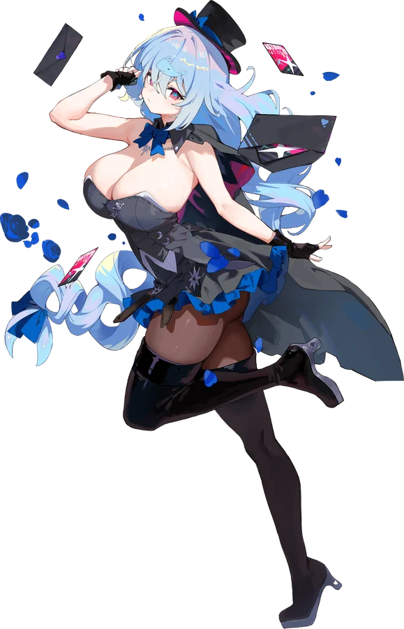
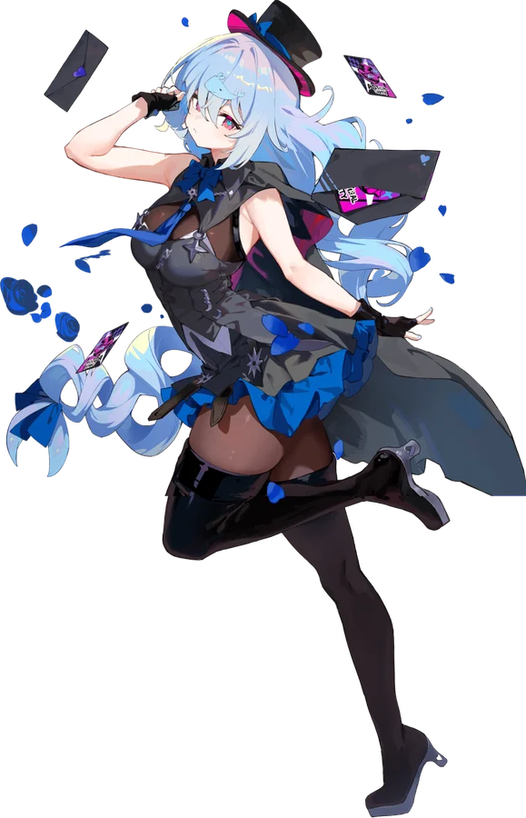
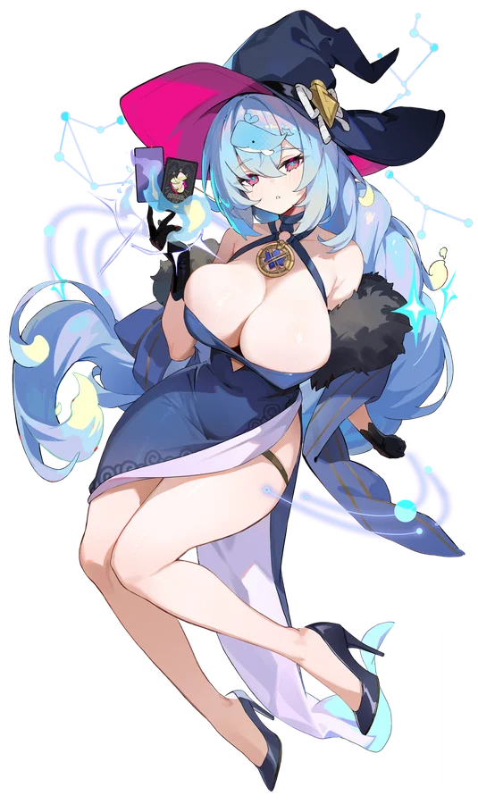
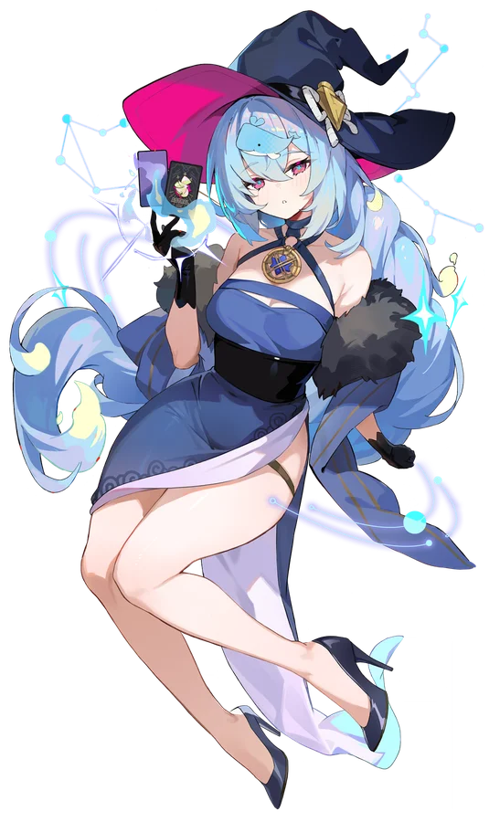
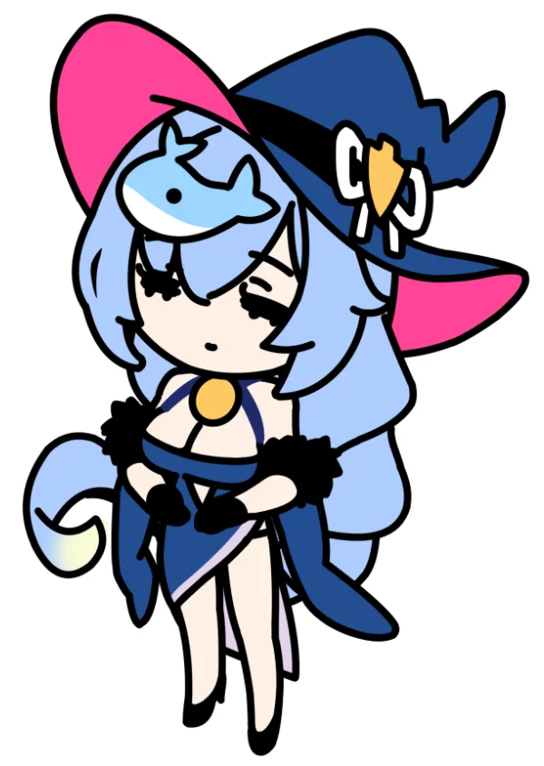
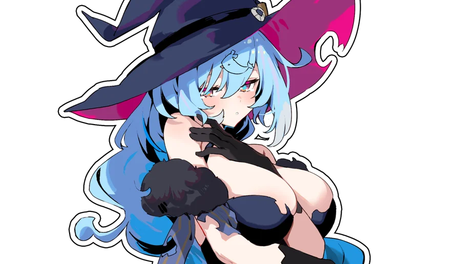
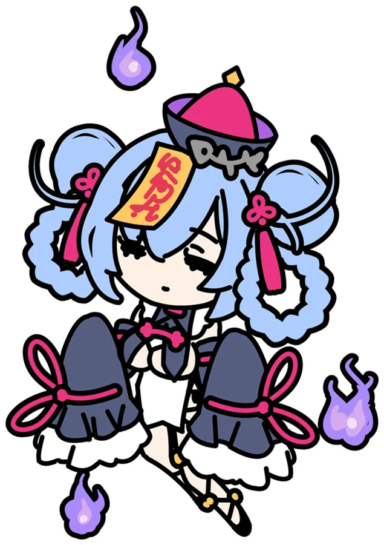
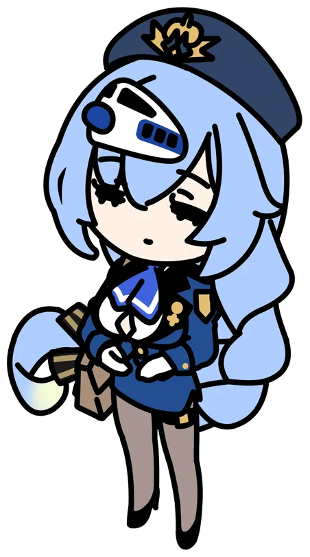
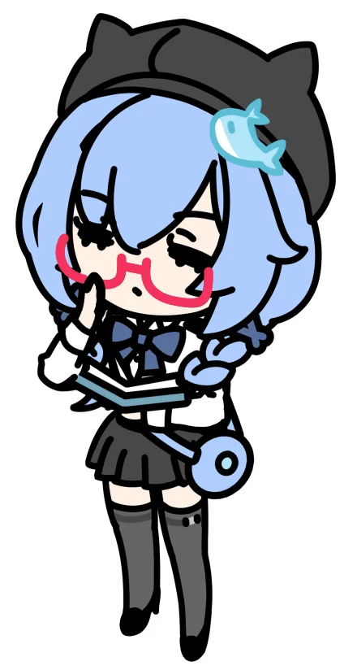
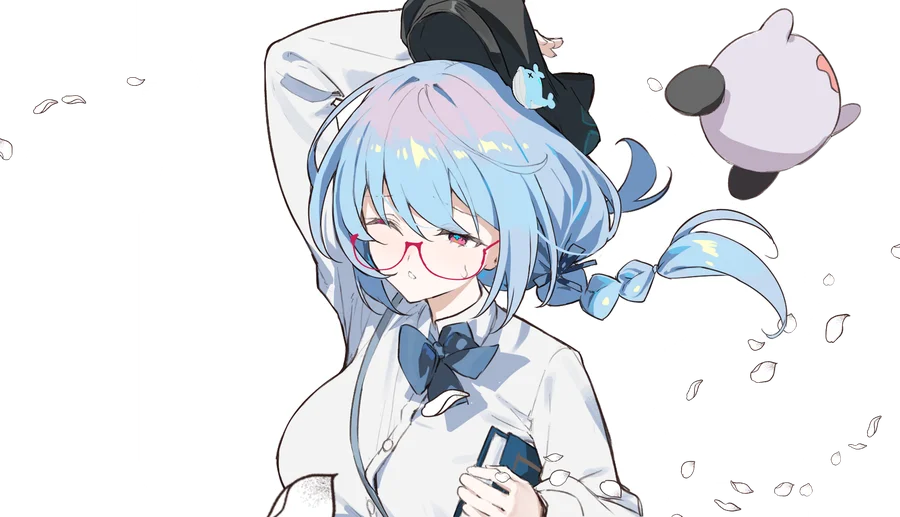

蓝海晴 · 命运少女
占卜店“日月”的老板。看起来比较成熟，其实才从大学毕业几年。因为性格和外表的缘故很受顾客欢迎。传言在大学时期加入的社团是一个情报组织，为了收集有关“星引擎”的消息。周末会去一个叫“虹之镜”的酒吧消遣，和那里的酒保库拉拉是多年的好友。
指定一个角色，使其受到伤害+1，持续2回合。 如果目标在持续期间被击倒，则蓝海晴获得4星币。如果持续期间内未被击倒，则目标回复4点生命。
PVE指定一个怪物，使其受到伤害+1，击倒该怪物使蓝海晴获得3星币，持续2回合。
自身移动的最终点数为6时，获得6星币。
持有虚弱印记（受到的伤害+1，如果被击倒则蓝海晴获得3）的怪物被击倒时，使击倒它的角色获得1张命运的指引。 使用主动技能时，使手牌中的遥控骰子变为命运的指引。
<div style="display: flex; width: 100%; justify-content: space-between;"> <div>蓝海晴通过主动技能标记的角色/怪物上方会出现一个闪烁的虚弱印记（受到的伤害+1，如果被击倒则蓝海晴获得3）（右图），同时该角色/怪物的状态栏内会存在对应的效果图标虚弱印记。</div> <div><gallery>icon blj 22.png</gallery></div> </div> <div style="display: flex; width: 100%; justify-content: space-between;"> <div>若玩家使用的皮肤为优雅身姿，则虚弱印记的图标会被替换为另一版本（右图）。</div> <div><gallery>icon blj 80.png</gallery></div> </div>
基础资料
PVE 特性
- 达到1星时立刻获得10星币
- 初始星币+6
- 达到3星时攻击力+1、防御力+1、移动速度+1

默认


羁绊皮肤


变装派对

几个好友在一起又聊到大学时御魂庆典的事情了。 “大四的最后一个御魂庆典真是开心呢。”露佳拿起咖啡杯吹着气说道。 “那次真是吓一跳，一个假期过去海晴是吃什么了变的那么丰满。”玲玲笑眯眯的用小指戳了戳海睛的腰。 “家族遗传吧..”海晴下意识地躲闪了一下。 “我还记得那个时候看僵尸片，非要给马克酱做一个相同的衣服穿上。” “你还非要让海晴试一下，最后衣服挤破了。”露佳调侃了一下玲玲。 “那还不是你们非要让我穿那么小的…”海晴显然有些害羞。 “当时我哪有‘尺寸’的概念啊！不过没事，马克酱二型不是就按照海晴身材做的吗。所以怎么样？”玲玲问露佳。 “不错，很活泼，人工智能也比较稳定。” “那就好，老朋友们过得好，比什么都重要。”
列车长

诚邀您搭乘本次专属列车，此为【星引擎】号专列。 让我们在星之引擎的轰鸣声中共同起航，踏上梦想的旅程！ 愿本次旅行能给你带来美妙的体验。 列车长蓝海晴敬赠~
优雅身姿
学年的最后一个学园祭，蓝海晴的班级出的是女仆咖啡厅。 蓝海晴被同学们首推成了女仆长，穿着女仆装为班级的咖啡厅服务。 对于蓝海晴而言，穿什么样的服装不是问题的关键。 优雅的服务，才是她认为的这个行业的唯一标准。 蓝海晴并没有经过专业的培训，但是从言行举止来看，她真的非常适合。 曼妙的身姿，得体的装扮。时刻都给远道而来的宾客们温暖的关怀。 “嗯呢，姑娘真的是长大了，以后一定会成为一个好妻子的。” 玲玲如同大叔一般，上下打量着蓝海晴，对她的动作评头论足。 “谢谢，今天真的麻烦你了。” 对着倒茶的蓝海晴，皮克西缓慢地拿起茶杯，品尝起来。 今年是最后一个学园祭，往后的日子大家都要各奔东西，不知道何时才能再见。 “这种珍贵的体验，未来可很少有机会能体验到呢，大小姐们。” 优雅的蓝海晴，回应着朋友们。
春日野餐


对蓝海晴而言，休假的日子是很多的。 相较于玲玲和露佳——一个是正常上班，一个是疯狂加班——蓝海晴的“日月”可以说是“摸鱼店”的典范。 开不开店、在不在店里，全看店主的心情。只要商店能正常卖货，占卜只是店主的副业罢了。只要生活过得去，蓝海晴就崇尚“睡饱了吃，吃饱了玩”的生活方式。 没办法，“日月”的地址实在太好了，就在“没有路”那条街上。来来往往的游客只买纪念品，就足够支撑蓝海晴的生意了。 所以只要有空闲，蓝海晴就会提前备好餐食，带上一本心爱的书，找一处公园的树荫下，铺开地毯，悠闲地看书、吃零食。 偶尔有人想为她拍照时，她也会大方地轻轻点头，随后便回到自己的状态——不会刻意摆姿势迎合他人。 这种悠然的时光，仿佛整个世界只剩她一人在静静享受。 下次能不能多叫几个人来呢？
共 15 个表情，点击可放大。
官方 wiki 没有这角色的 /获取 页，头像、名片、卡牌、骰子的完整清单暂缺；下方「档案」里保留了画廊中的零散素材。
人物传记
和大学时代比样貌有明显变化。
皮肤故事
变装派对
几个好友在一起又聊到大学时御魂庆典的事情了。 “大四的最后一个御魂庆典真是开心呢。”露佳拿起咖啡杯吹着气说道。 “那次真是吓一跳，一个假期过去海晴是吃什么了变的那么丰满。”玲玲笑眯眯的用小指戳了戳海睛的腰。 “家族遗传吧..”海晴下意识地躲闪了一下。 “我还记得那个时候看僵尸片，非要给马克酱做一个相同的衣服穿上。” “你还非要让海晴试一下，最后衣服挤破了。”露佳调侃了一下玲玲。 “那还不是你们非要让我穿那么小的…”海晴显然有些害羞。 “当时我哪有‘尺寸’的概念啊！不过没事，马克酱二型不是就按照海晴身材做的吗。所以怎么样？”玲玲问露佳。 “不错，很活泼，人工智能也比较稳定。” “那就好，老朋友们过得好，比什么都重要。”
列车长
诚邀您搭乘本次专属列车，此为【星引擎】号专列。 让我们在星之引擎的轰鸣声中共同起航，踏上梦想的旅程！ 愿本次旅行能给你带来美妙的体验。 列车长蓝海晴敬赠~
优雅身姿
学年的最后一个学园祭，蓝海晴的班级出的是女仆咖啡厅。 蓝海晴被同学们首推成了女仆长，穿着女仆装为班级的咖啡厅服务。 对于蓝海晴而言，穿什么样的服装不是问题的关键。 优雅的服务，才是她认为的这个行业的唯一标准。 蓝海晴并没有经过专业的培训，但是从言行举止来看，她真的非常适合。 曼妙的身姿，得体的装扮。时刻都给远道而来的宾客们温暖的关怀。 “嗯呢，姑娘真的是长大了，以后一定会成为一个好妻子的。” 玲玲如同大叔一般，上下打量着蓝海晴，对她的动作评头论足。 “谢谢，今天真的麻烦你了。” 对着倒茶的蓝海晴，皮克西缓慢地拿起茶杯，品尝起来。 今年是最后一个学园祭，往后的日子大家都要各奔东西，不知道何时才能再见。 “这种珍贵的体验，未来可很少有机会能体验到呢，大小姐们。” 优雅的蓝海晴，回应着朋友们。
春日野餐
对蓝海晴而言，休假的日子是很多的。 相较于玲玲和露佳——一个是正常上班，一个是疯狂加班——蓝海晴的“日月”可以说是“摸鱼店”的典范。 开不开店、在不在店里，全看店主的心情。只要商店能正常卖货，占卜只是店主的副业罢了。只要生活过得去，蓝海晴就崇尚“睡饱了吃，吃饱了玩”的生活方式。 没办法，“日月”的地址实在太好了，就在“没有路”那条街上。来来往往的游客只买纪念品，就足够支撑蓝海晴的生意了。 所以只要有空闲，蓝海晴就会提前备好餐食，带上一本心爱的书，找一处公园的树荫下，铺开地毯，悠闲地看书、吃零食。 偶尔有人想为她拍照时，她也会大方地轻轻点头，随后便回到自己的状态——不会刻意摆姿势迎合他人。 这种悠然的时光，仿佛整个世界只剩她一人在静静享受。 下次能不能多叫几个人来呢？
画廊其他素材


本地未收录该角色的语音台词。